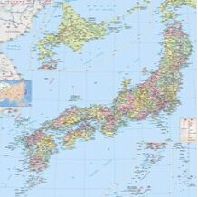

- 日本国旗
- 日本国徽
- 日本标志性建筑
- 日本地理位置
日本概况
日本是位于亚洲大陆东岸外的太平洋岛国。
人口概况
127,767,944(世界第10名)。根据中新网2009年9月21日报道, 日本总务省发表的统计数据显示, 截止2009年9月15日全日本65岁以上的老年人口为2898万人, 比去年增加了80万。
日本经济
日本经济高度发达, 国民拥有很高的生活水平。GDP方面, 2009年, 按照国际汇率计算的话, 日本国内生产总值5.068万亿美元, 居世界第2位(2009年中国GDP4.98万亿美元)。人均国内生产总值39,731美元, 是世界第17位。若以购买力平价计算, 国内生产总值位居世界第3位(次于美国和中国；[第四名:印度]), 人均国内生产总值是世界第23位。2004年末, 日本在海外的纯资产达1.8万亿美元, 也是世界最大。
外交关系
在国际关系上, 日本的最亲密盟友为美国 , 由于日本扼东北亚通往太平洋的门户, 一直是美国削弱共产主义在亚洲的前线岛链, 美军在日本设有军事基地。日本是美国在亚洲的重要军事据点。作为世界第二大经济体, 日本努力在世界舞台上争取与之经济实力相等的角色。日本是世界最大的对外援助输出国, 目前日本最大的对外援助对象为印度。
经贸往来
1972年9月29日，中日两国签署《中日联合声明》，实现邦交正常化，并放弃了日本侵华战争的国家赔偿，1973年1月互设大使馆。[4] 日本是中国第二大外资来源地。2008年，双边贸易额达2667.9亿美元，同比增长13%。中国已经超过美国成为日本的最大出口市场。据统计，2010年1至4月，中日两国的贸易额已达886.64亿美元，同比增长37.5%。2011年，中日贸易额达3428.9亿美元，同比增长15.1%，再创历史新高。截至2012年6月底，日本对华投资累计实际到位金额839.7亿美元。